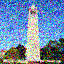

250 timesteps
 500 timesteps
500 timestepsFor this part we just set up the diffusion model with a random seed, I choose mine to be 185 which will be used throughout the project if you want to recreate my results. For part A we will only work with images of size 64x64 pixels thus the images might not be as sharp as one would like. But for part B the images will be even better. Below I will present and try to explain my resuults.
First of all I generated 3 different images with 2 different values for number of inference steps. First I tried with 20 denoising steps which was faster with the trade-off being image quality which increased when I changed the number of denoising steps to 50. The results are shown below.
Making an image noisy is an essential part of the diffusion process because it allows the model to learn how to reverse the noise and recover the original image. By progressively adding noise, the model is trained to understand the transition from noisy to clean data. This step is crucial in generative modeling, where the goal is to sample realistic images starting from random noise. Therefor we take a clean image and gradually make it noisier for each timestep, below you will see the testimage at different stages of noise addition.
500 timestepsHere we just use Gaussian blurring in order to denoise the images, as you can see the method is not very effective.
 500 timesteps
500 timestepsHere we just use the U-Net which calculates the Gaussian noise in the image and then removes it giving a clean image close to the original image. In order to get good results the model has which timestep it is on as as an inparameter. This gives the model knowledge about how much noise is in the image and then it is easier to calculate how much to remove.
 500 timesteps
500 timestepsAs we saw in the before section the model works much better at denosing than classical methods, however it works worse for the noisier image which is not suprising. The model works iteratively and in order to speed up the process without damaging the results noticebly we can do denoise every 30 timestep. Below I will first show the denosing process as the image becomes less and less noisy and also the results next to the classical denoising method.
500 timesteps